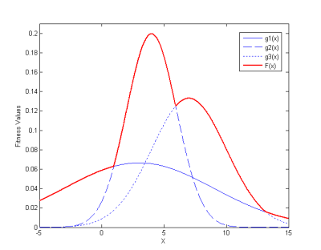
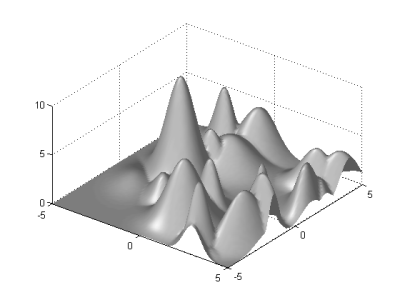
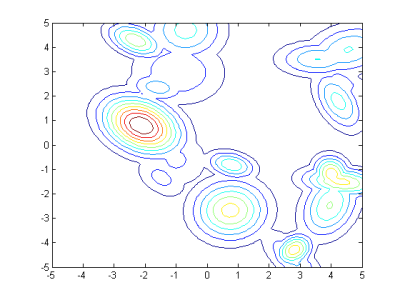
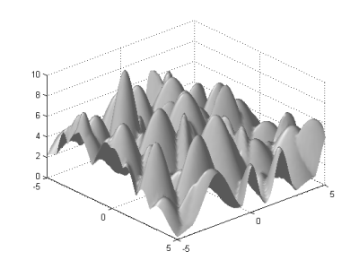
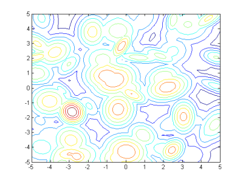
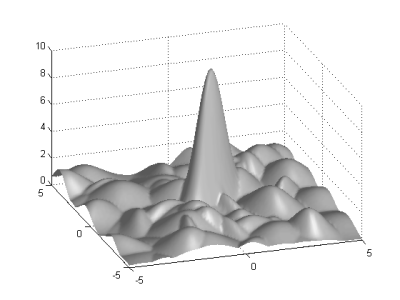
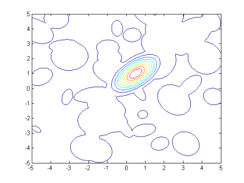
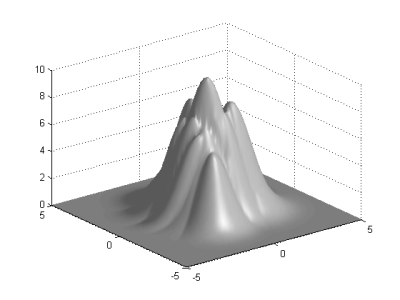
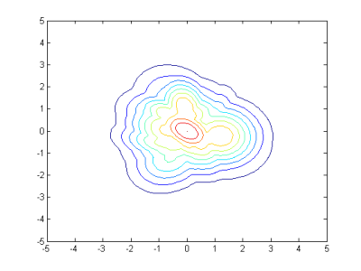

The Web Page of Max Set of Gaussians Landscape Generator
The Gaussian landscape generator described here is intended to be a general-purpose tool for generating unconstrained single-objective continuous test problems within box-bounded search spaces. It is also possible to be used as the platform for generating constrained and/or dynamical problems. The major motivation is to increase the research value of experimental studies on Evolutionary Algorithms and other optimization algorithms by giving experimenters access to a set of purposefully built test problems with controllable internal structure.
The major advantages of using a landscape generator compared to using classical benchmark test problems are listed as below:
The structure of test problems can be conveniently controlled by a small number of parameters.
A large number of test problems with similar structure can be generated to increase the reliability of experimental results.
Deep insights into the behaviour of algorithms can be achieved by relating their performance to the specific structural properties of test problems.
The basic components or building-blocks of this landscape generator are a set of multivariate Gaussian functions:
The fitness value of a vector X is determined by the weighted component that gives it the largest value:
Since the normalizing factor of each Gaussian function is a constant, it can be combined with its weight ω. Also, the nth root of the Gaussian function (i.e., n is the dimensionality) is used to avoid some issues in high-dimensional spaces.
The actual fitness function has the following form:
Generally speaking, the number of components serves as a rough indicator of the multimodality of the generated landscapes.
However, the actual number of optima is likely to be less than the number of components as the peaks of weak components could be dominated by others.

In the above example, the fitness function F(X) indicated by the red solid line consists of three components where only the second and the third components contribute to an optimum each. Nevertheless, the first component still plays a role in constructing the overall landscape.
Initialization Function: initialize.m
Fitness Function: fitness.m
Visualization Function: plotlandscape.m
initialize (n, m, u, l, g, r)
This function initializes the parameter values of each component (mean vector, covariance matrix and weight).
The following six input parameters are to be specified:
| n | the dimensionality of the landscape |
| m | the number of Gaussian components in each landscape |
| u | the upper boundary of the search space |
| l | the lower boundary of the search space |
| g | the value of the global optimum |
| r | the ratio between the fitness values of the best possible local optimum and the global optimum |
The outputs are the parameter values of each component, stored in three global variables:
meanvector (a m-by-n matrix containing the mean vector of each component).
covmatrix_inv (a cell structure containing the inverse covariance matrix of each component).
optimumvalue (a vector containing the ω value of each component).
With the default setting, the mean vector of each component is generated randomly within [l, u]n.
The covariance matrix of each component is generated in three steps:
A diagonal matrix S with eigenvalues is generated.
An orthogonal matrix T is generated through n(n-1)/2 rotations with random angles between [-π/4, π/4].
The covariance matrix is generated as TT·S·T.
The ω of the component corresponding to the global optimum is set to g while other weights are randomly generated within [0, g·r].
To have additional control on the structure of generated landscapes, consider the following approaches:
Generate mean vectors manually or according to a distribution other than the uniform distribution.
Use specific rotation angles.
Use specific variance values (e.g., sharp peaks vs. flat peaks).
Use specific ω values to explicitly control the height of each component.
[f, c]=fitness (X)
This function calculates the fitness values of a matrix input X.
X is assumed to be a p-by-n matrix where p is the number of individuals to be evaluated.
The fitness values are returned in the vector f.
The values given by each weighted component are returned in c, which is a p-by-m matrix.
This function is optimized for handling matrix inputs: evaluating 1000 individuals at once is much faster than making 1000 separate function calls.
plotlandscape (u, l, k)
This function generates surface & contour plots of 2D problems.
| u | the upper boundary of the plot |
| l | the lower boundary of the plot |
| k | the number of samples to be drawn in each dimension |
Note that the values of u and l do not necessarily need to be identical to those in the initialization function.
For the parameter k, the higher its value, the more precise the generated plot.
This landscape generator is easy to use: run the initialization function once and the fitness function as many times as necessary.
A typical routine is given below:
| initialize (2, 100, 5, -5, 10, 0.8); | % 100 Gaussian components, [-5, 5]2, global optimum value 10, best possible local optimum value 8 |
| plotlandscape (5, -5, 50); | % Generate a surface plot and a contour plot with 50 samples within [-5, 5] in each dimension |
| f=fitness (10*rand(1000,2)-5); | % Calculate the fitness values of 1000 random individuals within [-5, 5]2 |
Note that the initialization function uses random procedures rand ( )and randn ( ) and it is likely to get difference landscapes even with the same input parameters.
In order to precisely duplicate the landscapes used in the experiments, it is recommended to record the seeds used in rand ( ) and randn ( ).
Some examples of landscapes with different parameter values are shown below.
A landscape with 20 components
|  |  |
A landscape with 100 components
|  |  |
A landscape where the global optimum is significantly better than local optima.
|  |  |
A landscape with a big-valley structure.
|  |  |
M. Gallagher and B. Yuan (2006) "A General-Purpose Tunable Landscape Generator". To appear in IEEE Transactions on Evolutionary Computation.
B. Yuan and M. Gallagher (2003) “On Building a Principled Framework for Evaluating and Testing Evolutionary Algorithms: A Continuous Landscape Generator”. In Proceedings of the 2003 Congress on Evolutionary Computation, IEEE, pp. 451-458, Canberra, Australia.
Y. Gong, M. Nakamura and S. Tamaki (2005) "Parallel Genetic Algorithms on Line Topology of Heterogeneous Computing Resources". In Proceedings of 2005 Conference on Genetic and Evolutionary Computation, ACM, pp. 1447-1454, Washington DC, USA.
B. Yuan and M. Gallagher (2004) “Statistical Racing Techniques for Improved Empirical Evaluation of Evolutionary Algorithms”. In Proceedings of the 8th International Conference on Parallel Problem Solving from Nature (PPSN VIII), LNCS 3242, pp. 172-181, Birmingham, UK.
M. Gaviano, D. E. Kvasov, D. Lera and Y.D. Sergeyev (2003) "Algorithm 829: Software for Generation of Classes of Test Functions with Known Local and Global Minima for Global Optimization". ACM Transactions on Mathematical Software, vol. 29(4), pp. 469-480.
Z. Michalewicz, K. Deb, M. Schmidt and T. Stidsen (2000) "Test-case Generator for Nonlinear Continuous Parameter Optimization Techniques". IEEE Transactions on Evolutionary Computation, vol. 4(3), pp. 197-215.
R. W. Morrison and K. A. De Jong (1999) "A Test Problem Generator for Non-Stationary Environments". In Proceedings of the 1999 Congress on Evolutionary Computation, pp. 2047-2053.
K. A. De Jong, M. A. Potter and W. M. Spears (1997) "Using Problem Generators to Explore the Effects of Epistasis". In Proceedings of the Seventh International Conference on Genetic Algorithms, pp. 228-345.
B. E. Stuckman (1988) "A Global Search Method for Optimizing Nonlinear Systems". IEEE Transactions on Systems, Man, and Cybernetics, vol. 18(6), pp. 965-977.
B. Addis and M. Locatelli "A New Class of Test Functions for Global Optimization". Link: http://globopt.dsi.unifi.it/gol/test_functions/index.html
C. Macnish "Huygens Benchmarking Suite". Link: http://karri.csse.uwa.edu.au/cara/huygens/index.php
W. M. Spears and M. A. Potter "Repository of Test Problem Generators". Link: http://www.cs.uwyo.edu/~wspears/generators.html
P. N. Suganthan "EC Benchmarking (including CEC'05, '06, '07 special sessions)". Link: http://www.ntu.edu.sg/home/EPNSugan/index_files/comp-functions.htm
We are always happy to hear your experience with this landscape generator.
Please address your feedback and comments to:
Bo Yuan: boyuan@itee.uq.edu.au
Marcus Gallagher: marcusg@itee.uq.edu.au
Last Updated: 19/11/2009